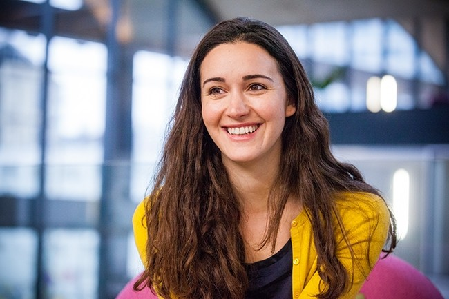
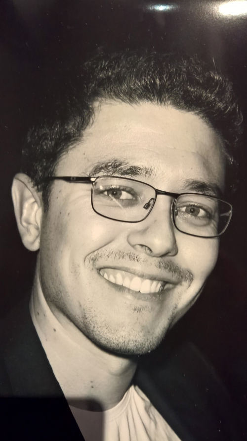
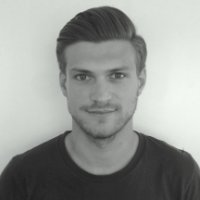

Dirigeants principaux:
| Roxanne Varza vient de Palo Alto, américaine d’origine iranienne, a vécu en Angleterre. Co-fondatrice de StartHer et de Tech.eu. Auparavant chez TechCrunch France et Microsoft Ventures. |  |
| Marwan Elfitesse: Relations start-up: né en banlieue parisienne, d'origine marocaine, a vécu dans la Silicon Valley. Auparavant chez Microsoft France et Nimbula |  |
| Cedric Gaudard: Partenariats: né à Paris, a vécu aux États-Unis. Auparavant chez Abercrombie et co-fondateur de trois startups. | 
|